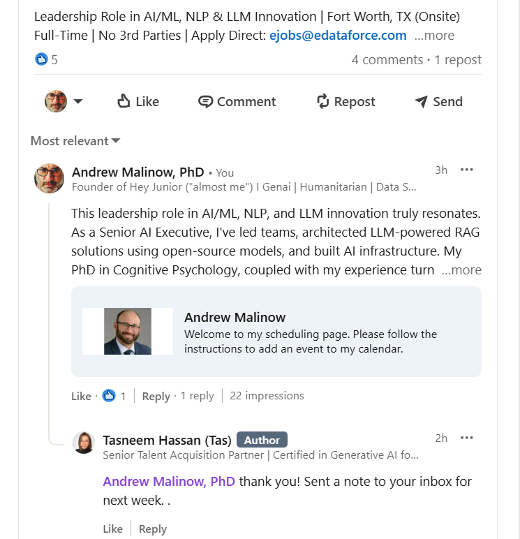

I applied to 300 jobs and got 1 interview.
Then I tried something different.
I started commenting instead of applying.
And everything changed.
Start getting interviews from conversations — not resumes.
Start Free Trial — No Credit Card RequiredWhat This Is
Junior is an AI tool that helps you:
- Find the right posts to comment on
- Write personalized comments that get replies
- Turn those replies into real conversations
- Turn conversations into interviews
No more resume black hole.
Why This Works
Applying to jobs is broken.
Everyone is:
- Sending resumes into ATS systems
- Competing with hundreds of applicants
- Getting ignored
But hiring doesn’t actually work that way.
Conversations get interviews.
Proof
I tested this myself.
In 6 weeks:
- 300 applications -> 1 interview
- 1 comment -> multiple conversations -> interviews
That’s when I built Junior.

How It Works
- Junior finds posts where companies are hiring
- It writes thoughtful, personalized comments
- You post them directly from your account
- People respond -> conversations start
That’s where interviews come from.
Stop applying. Start conversations.
Try Junior Free — No Credit Card RequiredRemove Friction
- No resume rewriting
- No cover letters
- No mass applying
Just real conversations with real people.
If you're stuck applying and hearing nothing back…
This is a different way to do it.
Start Free Trial14-day free trial · No credit card required